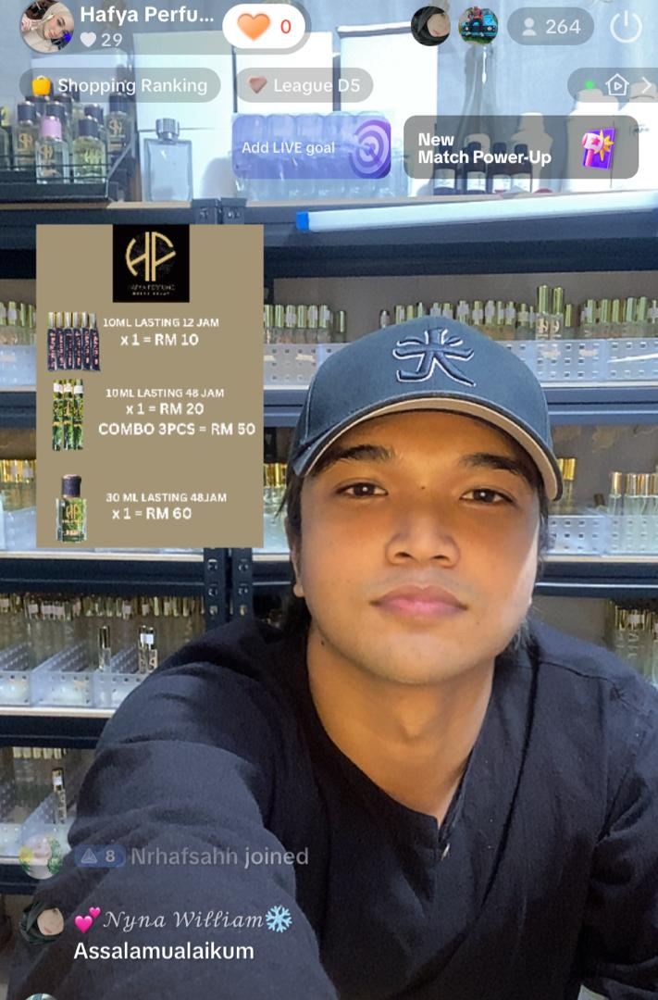
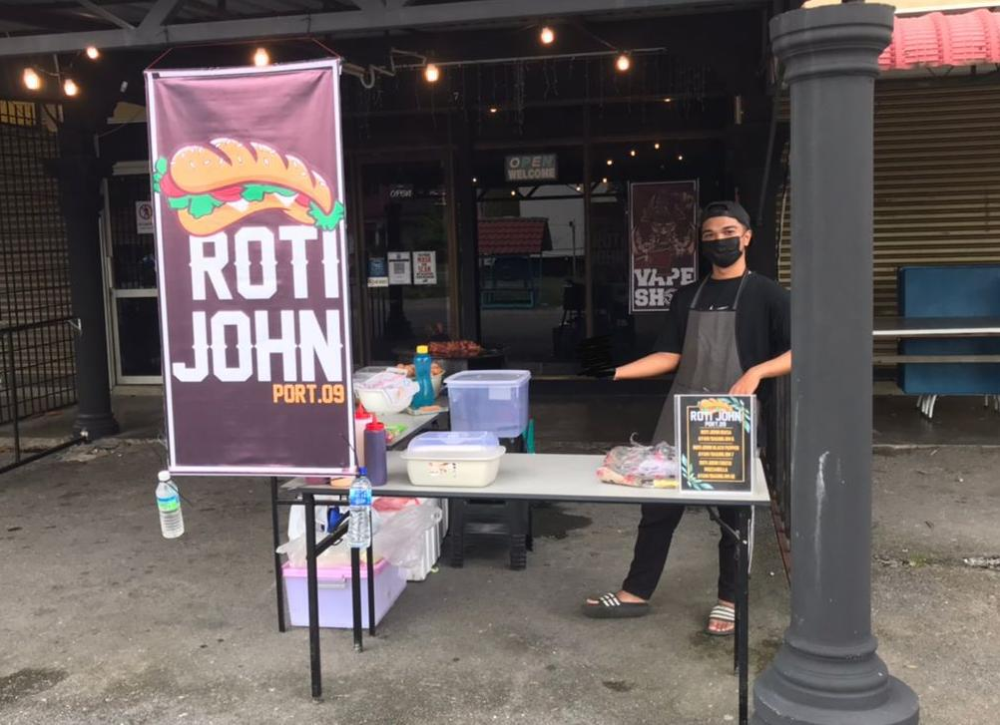
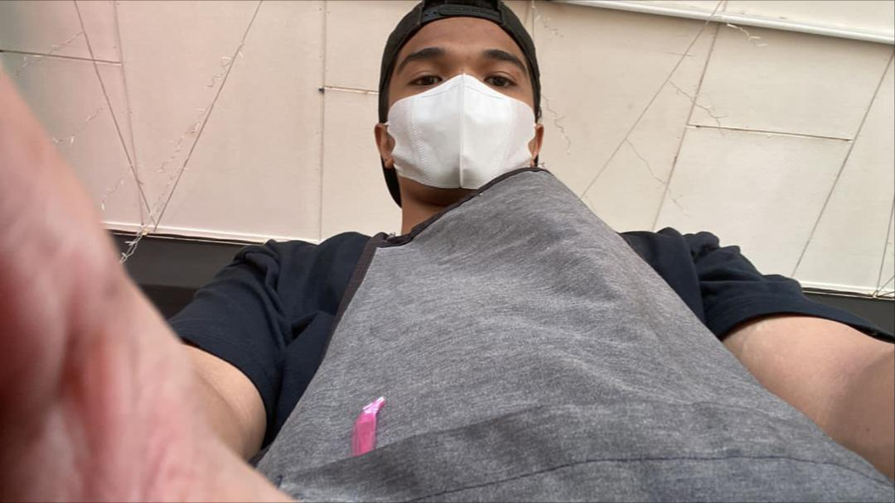
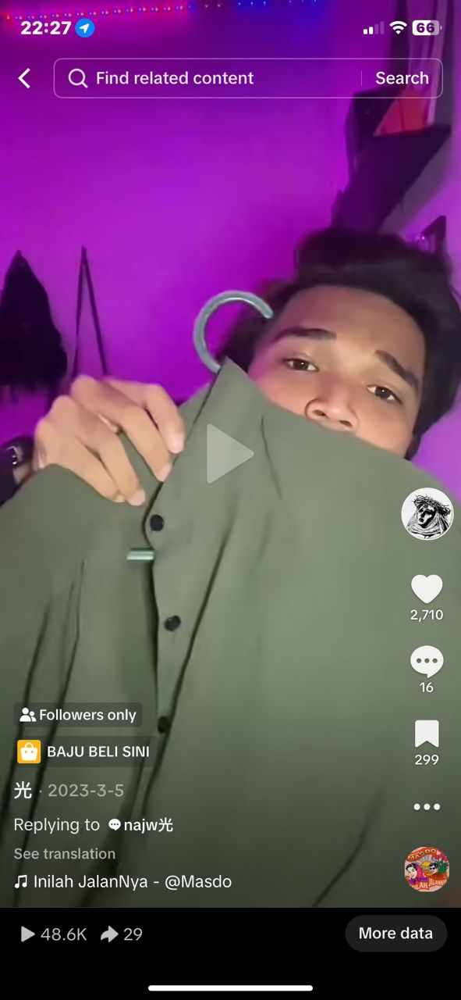

I once sold Roti John during Ramadan, a Tiktok live host, marketer and also affiliate.

During my semester break, I did a part-time job as a Tiktok live host and marketer of Hafya Perfume.
This job gave me such a great experience as it had improved my communication skills and I also earned a side income.


I sold Roti John while waiting for my SPM results. Besides making side income, I could also fill my free time in a good way.

In 2023, I also joined Tiktok affiliate program and achieved a great outcome as Tiktok audience really encouraged young people to do business.